Lab 4 - Exploring Basic Queries
Lab Goal
This lab dives into using PromQL to explore basic querying so that you can use it to visualize collected metrics data.
Basic PromQL - Review current lab setup
A quick review: Be sure you've completed the previous lab
before proceeding.
If you've done that, then you now have Prometheus installed, configured, and running (maybe for some time now) collecting time series data known as metrics. You've also built and installed the services demo project to provide a service that Prometheus scrapes for a varied data collection. This involved re-configuring Prometheus to scrape the new services instance and reloading it, which was a restart, a fresh container run, or a
In this lab, you'll start using the query language and see what we can find out from our metrics data collection.
If you've done that, then you now have Prometheus installed, configured, and running (maybe for some time now) collecting time series data known as metrics. You've also built and installed the services demo project to provide a service that Prometheus scrapes for a varied data collection. This involved re-configuring Prometheus to scrape the new services instance and reloading it, which was a restart, a fresh container run, or a
helm upgrade, depending on
the installation path you chose. The
longer this setup is running, the more data your queries will display as the graph views can be
adjusted by time intervals.In this lab, you'll start using the query language and see what we can find out from our metrics data collection.
Basic PromQL - Before you query, check your endpoints
Whichever installation path you took in the previous lab, the rest of this lab uses the same two
addresses: Prometheus at
http://localhost:9090 and the services demo metrics
at http://localhost:8080/metrics. On the source and container paths both are
already bound to those ports and there is nothing to do here. On the Kubernetes (k3s) path
nothing is reachable until both port-forwards are running, each in its own terminal window:
$ kubectl port-forward -n prometheus svc/workshop-prometheus-server 9090:9090
$ kubectl port-forward -n prometheus svc/services-demo 8080:8080
The one difference you will actually see in your query results is the value of the
instance label, as each path scrapes the services demo through a different
address:- source:
instance="localhost:8080" - container:
instance="host.containers.internal:8080" - Kubernetes (k3s):
instance="services-demo:8080"
Basic PromQL - Starting with selecting metrics
The basic first step to querying your metrics data collection (time series data) is to select
some portion of that data. You have to start somewhere, with a basic selection, before you
move to transforming or performing calculations on your selected data.
When you select some metric, you are going to start by selecting all instances of that metric with no filtering at all. The second step will be to filter based on a metric
When you select some metric, you are going to start by selecting all instances of that metric with no filtering at all. The second step will be to filter based on a metric
NAME and one or more of its LABELS.
Basic PromQL - A few definitions before querying
Let's look at what you are going to be doing in your first basic queries:
- Metric name - querying for all time series data collected for that metric
- Label - using one or more assigned labels filters metric output
- Timestamp - fixes a query single moment in time of your choosing
- Range of time - setting a query to select over a certain period of time
- Time-shifted data - setting a query to select over a period of time while adding an offset from the time of query execution (looking in the past)
Basic PromQL - Services demo metrics by name
You're going to start with queries targeting the services demo metric names you saw listed when
you installed it in the previous lab. You can view all of them and their available labels in your
browser at its metrics endpoint
http://localhost:8080/metrics (if that
address does not respond on the Kubernetes path, your port-forward is not running, see the
previous endpoints slide):
# HELP demo_api_http_requests_in_progress The current number of API HTTP requests in progress.
# TYPE demo_api_http_requests_in_progress gauge
demo_api_http_requests_in_progress 1
# HELP demo_api_request_duration_seconds A histogram of the API HTTP request durations in seconds.
# TYPE demo_api_request_duration_seconds histogram
demo_api_request_duration_seconds_bucket{method="GET",path="/api/bar",status="200",le="0.0001"} 0
demo_api_request_duration_seconds_bucket{method="GET",path="/api/bar",status="200",le="0.00015000000000000001"} 0
demo_api_request_duration_seconds_bucket{method="GET",path="/api/bar",status="200",le="0.00022500000000000002"} 0
demo_api_request_duration_seconds_bucket{method="GET",path="/api/bar",status="200",le="0.0003375"} 0
demo_api_request_duration_seconds_bucket{method="GET",path="/api/bar",status="200",le="0.00050625"} 0
demo_api_request_duration_seconds_bucket{method="GET",path="/api/bar",status="200",le="0.000759375"} 0
demo_api_request_duration_seconds_bucket{method="GET",path="/api/bar",status="200",le="0.0011390624999999999"} 0
demo_api_request_duration_seconds_bucket{method="GET",path="/api/bar",status="200",le="0.0017085937499999998"} 0
demo_api_request_duration_seconds_bucket{method="GET",path="/api/bar",status="200",le="0.0025628906249999996"} 0
demo_api_request_duration_seconds_bucket{method="GET",path="/api/bar",status="200",le="0.0038443359374999994"} 0
...
Basic PromQL - Selecting a metric by name
Let's start by selecting the below metric name using the Prometheus expression browser which you
can find at
http://localhost:9090 (again, on the Kubernetes path this needs
its port-forward running). Cut-and-paste the below line to select all
time series data from our collection in Prometheus:
demo_api_request_duration_seconds_count
Basic PromQL - Results metric selection
As you can see, the metric
demo_api_request_duration_seconds_count selects
all LABELS associated with it. In this case they are
INSTANCE, JOB, METHOD, PATH, STATUS. Your results should look something like
this (the screenshots in this lab were captured on the source path, so your
INSTANCE value will read differently on the container and Kubernetes paths):
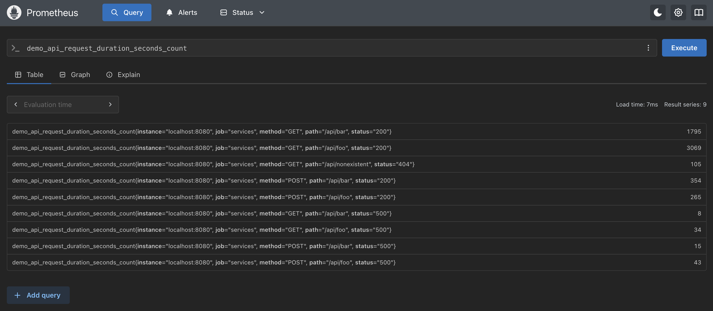
Basic PromQL - Shorthand metric selection
The metric name selected was shorthand to make it easier to use. If you are interested, the
full form to select a metric by name is as follows. Be sure to give it a try in your instance
to see the same results as before:
{__name__="demo_api_request_duration_seconds_count"}
is the same as:
demo_api_request_duration_seconds_count
Basic PromQL - Filtering using a label
Now we can start filtering our selection output by using a specific label. You might have noticed
that the output had two sorts of
METHOD, either GET or POST, so we can narrow the
output down by half just by selecting one of them as follows:
demo_api_request_duration_seconds_count{method="POST"}
Basic PromQL - Filtering auto-completion
Note that entering the query (typing by hand) in the expression browser includes auto-completion
suggestions as you go:
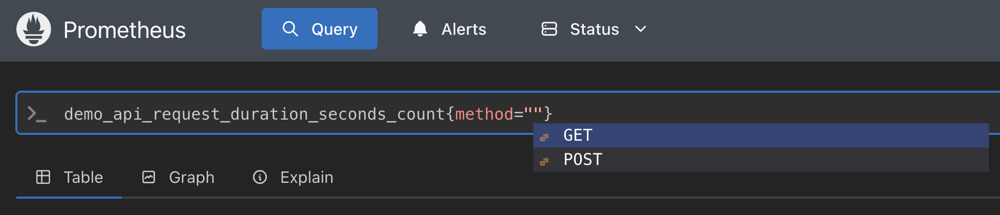
Basic PromQL - Results filtering a label
The query filtered our output to only the entries containing a method with value
POST, which has reduced our results listing by half:
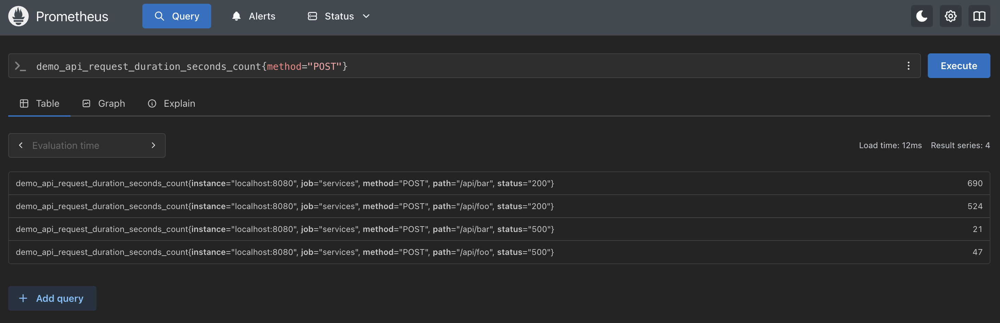
Basic PromQL - Filtering with multiple labels
To further refine our search we can be more specific by adding more labels to our query. Try
the following query with two labels filtering your results:
demo_api_request_duration_seconds_count{method="POST", path="/api/foo"}
Basic PromQL - Results multiple labels
This query with filtering using two labels narrowed our results some (note that all labels must
match to select a metric):
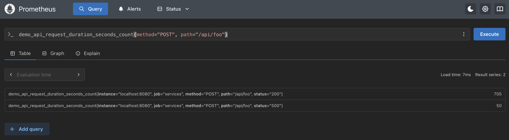
Basic PromQL - Filtering with multiple labels
To further refine our search we can be more specific by adding more labels to our query. Three
labels should be enough to get a single results, so try this one:
demo_api_request_duration_seconds_count{method="POST", path="/api/foo", status="500"}
Basic PromQL - Results multiple labels
This final query is specific enough after filtering with three labels to narrow our search
results down to one final answer:
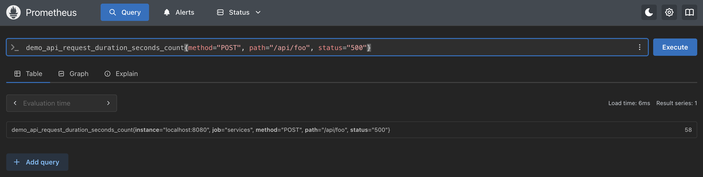
Basic PromQL - Possible matching operators
When filtering our queries up to now, we've only used the equality operator (=), there are
more to help you with filtering:
=: Equals
!=: Non-equals
=~: Regular expression matching
!~: Regular expression non-match
Basic PromQL - Filtering with non-equals
Revisiting the first selection query we did with a single label filter, we can apply non-equals
to select results for this metric where the label
METHOD is not POST:
demo_api_request_duration_seconds_count{method!="POST"}
Basic PromQL - Results non-equal label
The results of our non-equal query:
Basic PromQL - Explore more selecting labels
This is the time for you to now explore queries using equals and non-equals with a variety
of metric names. Remember you can use auto-completion to explore the available labels.
Basic PromQL - Filtering with regular expressions
Now let's try and select using just a regular expression and leave out any specific metric name
to see what metrics are using our API in a
PATH label. You need curly
brackets to query only a single label, or a comma separated list of labels:
{path=~"api"}
Basic PromQL - First attempt regexp
The results of our first attempt are disappointing. The reason it's empty is that Prometheus
matches regexp against the full string instead of a partial string. We have no
PATH labels with only the word api in them. In the next slide we can try
again:
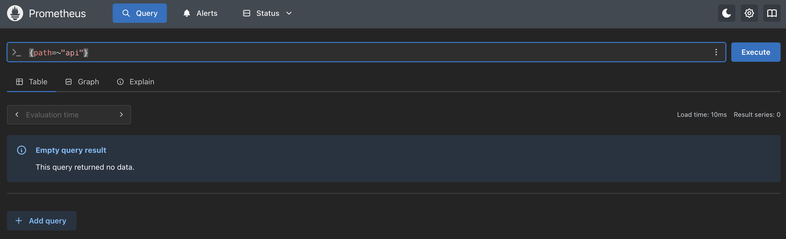
Basic PromQL - Filtering with regular expressions
We want to select any metric with a
PATH label that contains the string
api, so let's make sure we search for everything that exists before and
after the api string. To do that we start with an anchor (^) and wildcard
(*) followed by a dot to anchor to the api string, then follow it with
another dot to anchor our wildcard (*) for any remaining string values after
api:
{path=~"^*.api.*"}
Basic PromQL - Filtering results for regexp
This looks much better, a long list of metric names (multiple if you scroll down and inspect
the selection results) and they all container the string
api embedded in the
PATH label:
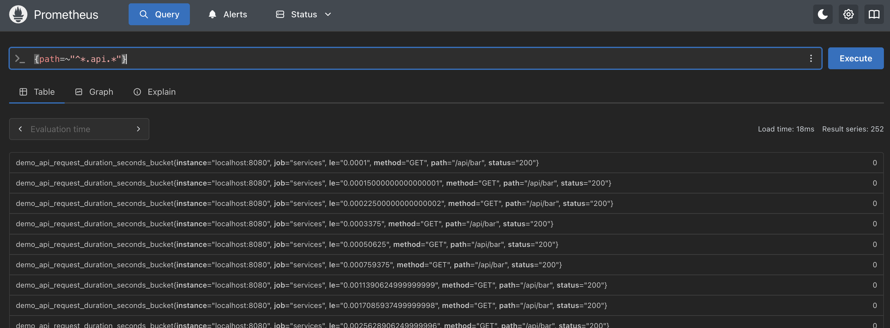
Basic PromQL - Danger with regular expressions
Now we get the bright idea to try out the regular expression non-match operator (!~) by
adjusting our select query from looking for
api in the
PATH label to looking for all metrics that don't have the string
foo in them, like this:
{path!~"^*.foo.*"}
Basic PromQL - Safety valve for regexp
We end up getting an error message like this and might think we did something wrong. We didn't,
other than set up a query that is so wide in matching metrics that it would put massive load on
your Prometheus instance. The fine engineers behind this project decided to put a safety stop
in place when queries are too much for the system, which plays out in an error message:
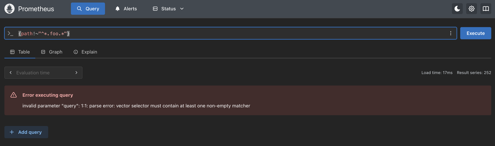
Basic PromQL - Explore more regexp
This is the time for you to now explore queries with your own regexps where you try to
select results and see what works as you learn about these types of queries.
Basic PromQL - Instant vectors explained
Up to now you've only done queries selecting the single latest value for all series found, known
as an INSTANT VECTOR. There are functions that require a range of values and not just a
single value. These are known as a RANGE VECTOR and have a duration specifier at the
end in the form
[number,unit]. Let's try this one to select all user cpu
usage over the last minute:
demo_cpu_usage_seconds_total{mode="user"}[1m]
Valid durations are:
ms - milliseconds
s - seconds
m - minutes
h - hours
d - days
w - weeks
y - years
Basic PromQL - Range vectors in action
The user cpu usage over a range vector of one minute:
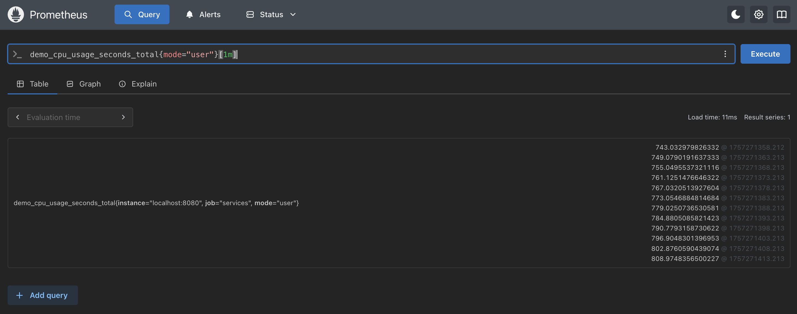
Basic PromQL - Explore more range vectors
This is the time for you to now explore queries and try out various ranges to see what
the resulting queries might be. Also try applying them to different metric names.
Basic PromQL - Time-shifting data selection
One issue that's going to come up is how to select data in the past, so that you can compare it
to current data. This is known as time-shifting, where you run your selection query but want it
to look in a time frame in the past. To do this you append
offset and a duration,
such as looking at user cpu usage over one minute back one hour ago:
demo_cpu_usage_seconds_total{mode="user"}[1m] offset 10m
Basic PromQL - Results time-shifting selection
The user cpu usage over a range vector of one minute looking back to 10 minutes ago (noting that
if you get a
"query returned no data" response, you might not have data
collection going back that long, so just shorten the offset duration based on how long your
environment has been running, such as 10m shown here):
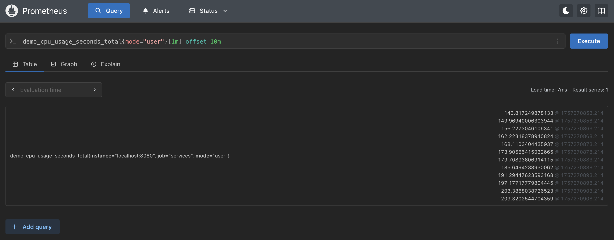
Basic PromQL - Searching in the future
Time-shifting offsets can be negative number, which causes selection queries to look into the
future for data, relative to their current evaluation timestamp. These negative offsets are not
a common use case and should be avoided unless you are sure you have a special reason for them.
For this reason, they are not covered in this workshop.
Basic PromQL - Graphic visualization of metrics
Up to now you've just been exploring simple selections of counter metrics, which produced a
table view like this from our very first query:
demo_api_request_duration_seconds_count{method="POST"}
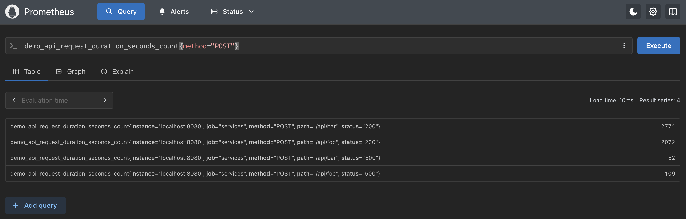
Basic PromQL - Selecting counters for graphs
This is not a metric to visualized in a graph (select the graph tab to view) as it's an absolute
value increasing over time:
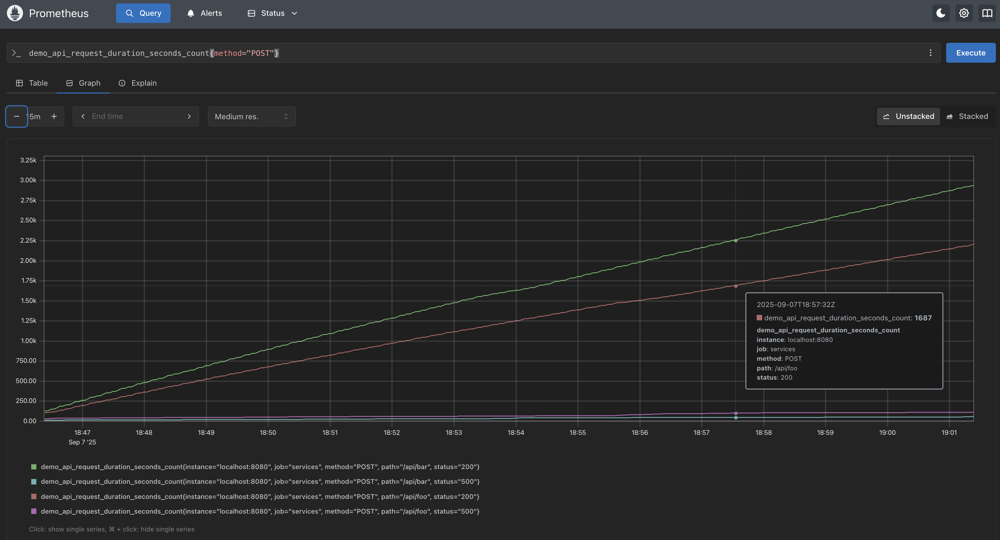
What we are more interested in is HOW FAST a count increases over time, so let's explore that in the next slide...
Basic PromQL - Visualizing using rate function
The function of choice for calculating the change over time in a metric is to use the
rate() function. It calculates the change of a counter per-second over a given
period of time. In our example below, we are going to check the rate over a 5-minute window:
rate(demo_api_request_duration_seconds_count{method="POST"}[5m])
Basic PromQL - Graphing the rate function
The graph shows a more interesting view of the metric performance over time using the rate
function. Note you might have to adjust the length of your viewing window, here shown at 30 mins,
depending on your time of scraping metrics to see what is shown here with the changes over time:
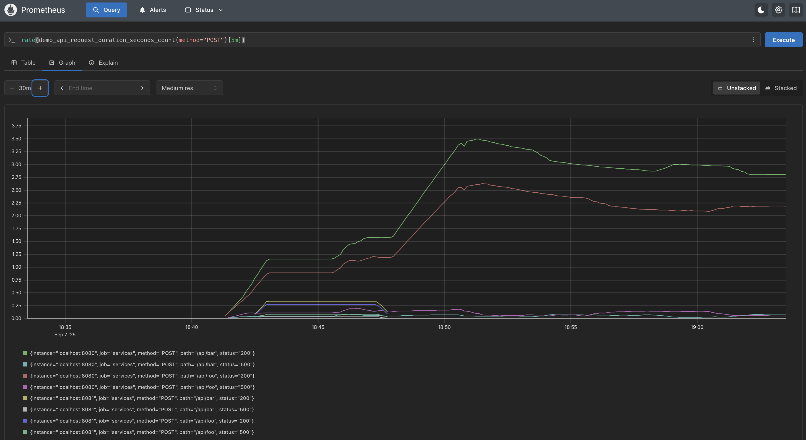
Basic PromQL - Inside the rate function
The inner workings of the rate function are important to understanding what you are viewing in
the resulting graphic visualizations:
- counter metrics reset to 0 when a scraping process resets
- rate (during any window) assumes counter decrease is reset
- rate adjusts all following samples in window it's measuring to fix this
- rate extrapolates first and last samples under the window boundary to actual window edges
- can report noninteger rates for counters with integer increases
Basic PromQL - Visualizing inside rate function
This graphic shows how the rate function works over its window and how it deals with resets
of the scraping process:
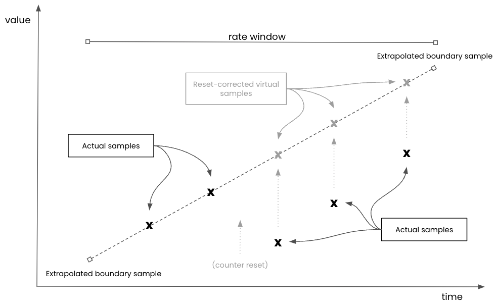
Basic PromQL - Visualizing using irate function
If we want to zoom in on a rate function, we can increase the resolution of our graph by using
the
irate() function. It calculates only the last two samples within a
given window. The function then calculates an INSTANTANEOUS rate from
those two samples. The provided window tells irate how far to look back for the two samples and
reacts faster to counter changes. Let's see what our counter looks like in a higher resolution
graph:
irate(demo_api_request_duration_seconds_count{method="POST"}[5m])
Basic PromQL - Graphing the irate function
The graph shows more deviations over the time frame given, uncovering short dips in the rate that
weren't visible before. (Note that the rate function gives a smoother graph and is recommended
for use in alerting rules that should not fire on short spikes in rate):
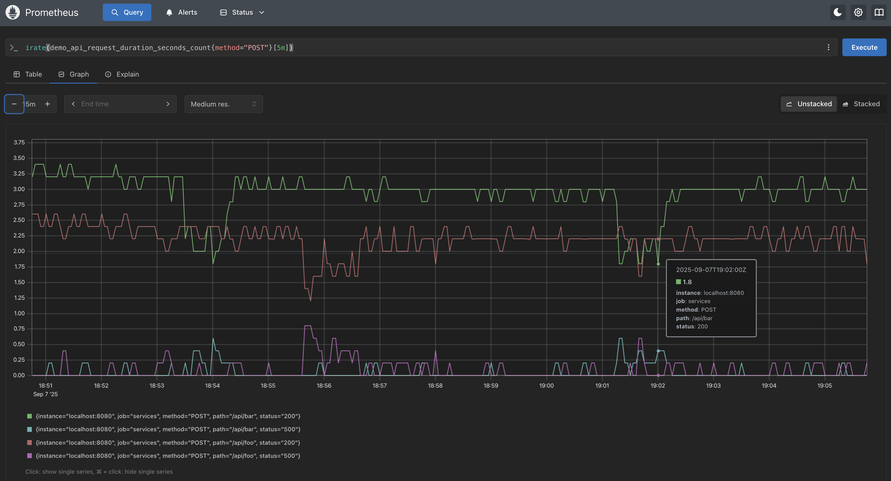
Basic PromQL - Visualizing using increase function
The default on rate and irate functions is to calculate using a per-second rate of sampling. If
we want to query the total increase over a give time window, we need to use the
increase() function:
increase(demo_api_request_duration_seconds_count{method="POST"}[30m])
Basic PromQL - Graphing the increase function
The graph shows the total increase over our 30-minute time window for this counter:
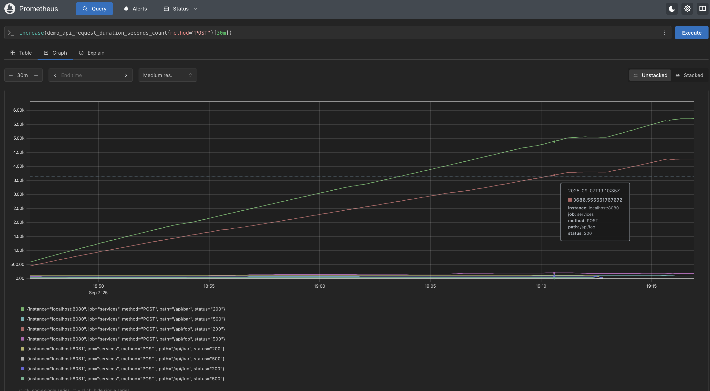
Intermezzo - Note about rate and friends
This family of functions needs at least two (2) samples from within the specified window, or it
will not be able to return any output. The standard is to set window sizes to be four times (4x)
the scrape interval to ensure reliable output even when failures happen, such as shown below:
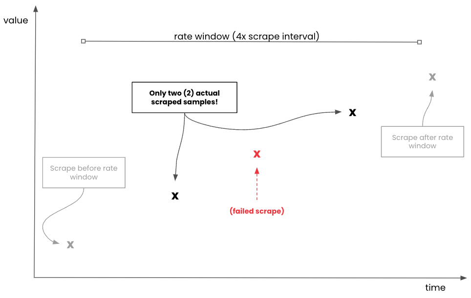
Basic PromQL - Selecting gauges for graphs
Since
rate, irate, and increase
functions only help visualize counter metrics due to the behavior of correcting all decreases
in value as a reset and only outputting non-negative values. When we want to track values that
can decrease as well as increase, such as temperature, we use gauge metrics. There are two
functions we can use to help visualize gauge metrics, the deriv() and
delta() functions.
Basic PromQL - Visualizing using deriv function
To track our services api requests over the last 15 minutes, both increases and decreases, we
can use the
deriv() function. You might need to play with the measurement
window to catch the collected data based on how long you have your instance running for this
workshop, here you see 15 minutes as an example:
deriv(demo_api_request_duration_seconds_count{job="services"}[15m])
Basic PromQL - Graphing the deriv function
The graph shows what our gauge metric has captured over the 15-minute window used in this
displayed example output:
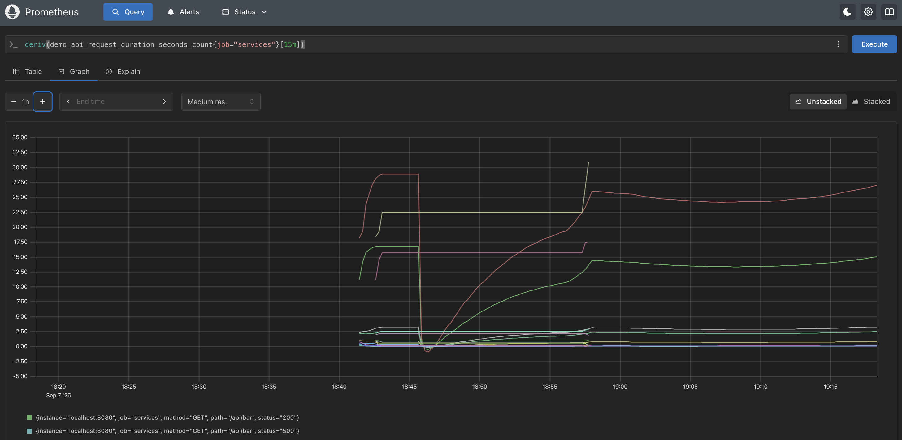
Basic PromQL - Visualizing using delta function
To track our services api requests over the last 15 minutes, sampling only the first and last
values in the given time window, we can use the
delta() function. You might
need to play with the measurement window to catch the collected data based on how long you have
your instance running for this workshop, here you see 15 minutes as an example:
delta(demo_api_request_duration_seconds_count{job="services"}[15m])
Basic PromQL - Graphing the delta function
The graph shows what our gauge metric has captured over the 15-minute window used in this
displayed example output, note the smooth graph is now more jagged as the sample is just two
data points (first and last in the time window):
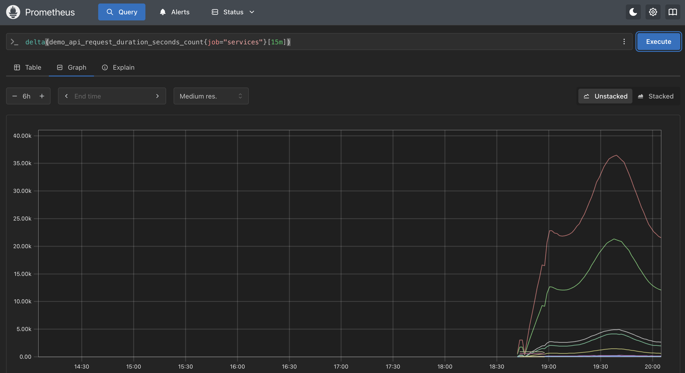
Basic PromQL - Visualizing the future
Let's have some fun and look at visualizing how our gauge metric will look one hour in the
future. This sort of query is useful when, for example, building an alert to tell you when
your memory is about to fill up in the next hour. The function
predict_linear() in the following query will try to predict what the memory
usage will be in one hour, based on its development in the last 15 minutes:
predict_linear(demo_memory_usage_bytes{job="services"}[15m], 3600)
Basic PromQL - Graphing the future
The graph shows what might happen with our memory usage for the services demo job based on 15
minutes of historical data:
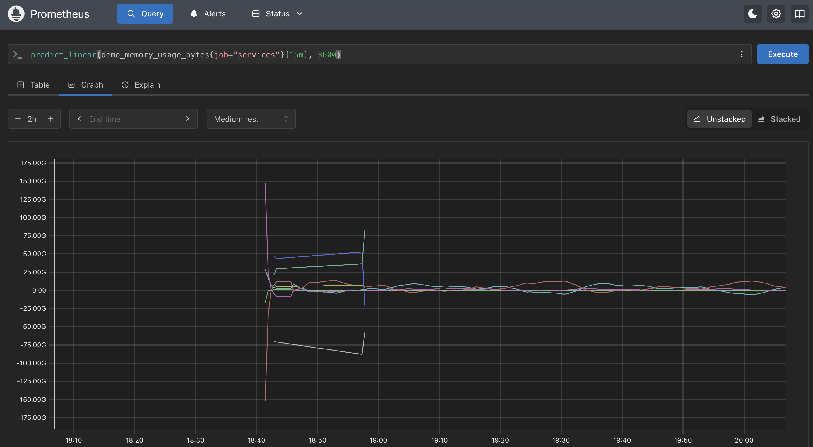
Basic PromQL - Visualize highly dimensional data
Up to now you've been visualizing time series data that is highly dimensional. That means you have
the ability to drill down into more and more detail, such as using one, two, and then three
labels to narrow your search of the data.
Now we are going to look at how you can aggregate over all these dimensions (labels for example) to get a less detailed view. To do this you'll be using aggregation functions
Now we are going to look at how you can aggregate over all these dimensions (labels for example) to get a less detailed view. To do this you'll be using aggregation functions
sum, avg, min, and
max. There are many more, see the
aggregation operators documentation.
Note that these operators do not aggregate over time, but across multiple series at each
point in time.
Basic PromQL - Looking first all dimensions
When we first look at the selection of metric data we see in the TABLE view all the dimensions
we can get details from and use to narrow our search (labels), but next we are going to look at all these
dimensions, across multiple series (data points), at each point in time.
demo_api_request_duration_seconds_count{job="services"}
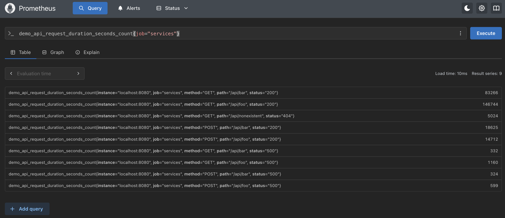
Basic PromQL - Visualizing using sum function
The function
sum() is going to give us a look across all the previous
dimensions for 5-minute period of time and then look at this across all those captured series:
sum(
#individual rates for each dimension.
rate(demo_api_request_duration_seconds_count{job="services"}[5m])
)
Basic PromQL - Graphing the sum function
The graph shows the results of our sum function across highly dimensional metrics:
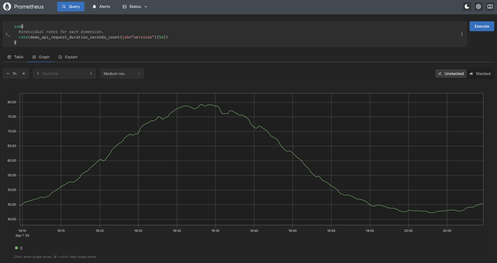
Basic PromQL - Visualizing using avg function
The function
avg() is going to give us a look across all the previous
dimensions for 5-minute period of time and then look at this across all those captured series:
avg(
#individual rates for each dimension.
rate(demo_api_request_duration_seconds_count{job="services"}[5m])
)
Basic PromQL - Graphing the avg function
The graph shows the results of averaging across our highly dimensional metric query:
Basic PromQL - Visualizing using min function
The function
min() is going to give us a look across all the previous
dimensions for 5-minute period of time and then look at this across all those captured series:
min(
#individual rates for each dimension.
rate(demo_api_request_duration_seconds_count{job="services"}[5m])
)
Basic PromQL - Graphing the min function
The graph shows the results of looking at minimums across our highly dimensional metric query:
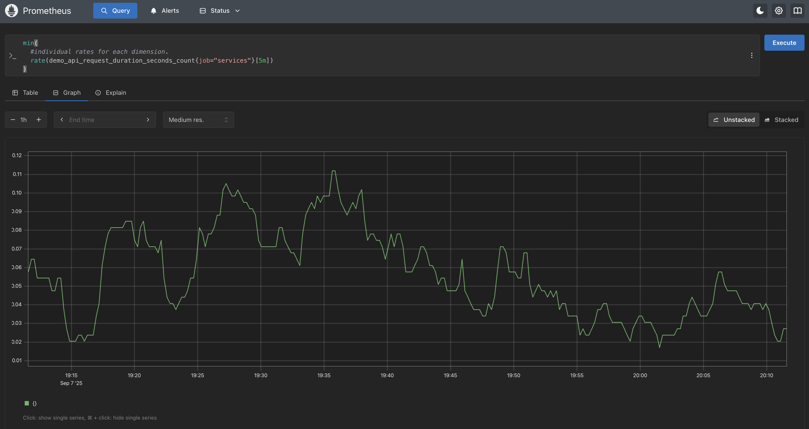
Basic PromQL - Visualizing using max function
The function
max() is going to give us a look across all the previous
dimensions for 5-minute period of time and then look at this across all those captured series:
max(
#individual rates for each dimension.
rate(demo_api_request_duration_seconds_count{job="services"}[5m])
)
Basic PromQL - Graphing the max function
The graph shows the results of looking at maximums across our highly dimensional metric query:
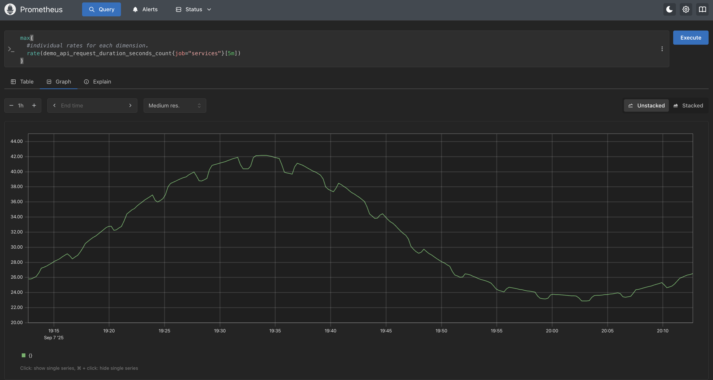
Basic PromQL - Visualizing using without function
The problem with aggregation functions is that they work on so many dimensions, as you can
imagine that's resource intensive. It's always advisable to use these functions on partial sets
of dimensional data, for example by excluding labels you do not need. The function
without() is going to give us the power to exclude some dimensional data in
the same query we've been using:
sum without(method, status) (
#individual rates for each dimension.
rate(demo_api_request_duration_seconds_count{job="services"}[5m])
)
Basic PromQL - Graphing the without function
The first graph shows the dimensions being summed in the second, but without the method or
status labels. The dimensions being queried have been cut by 50%:
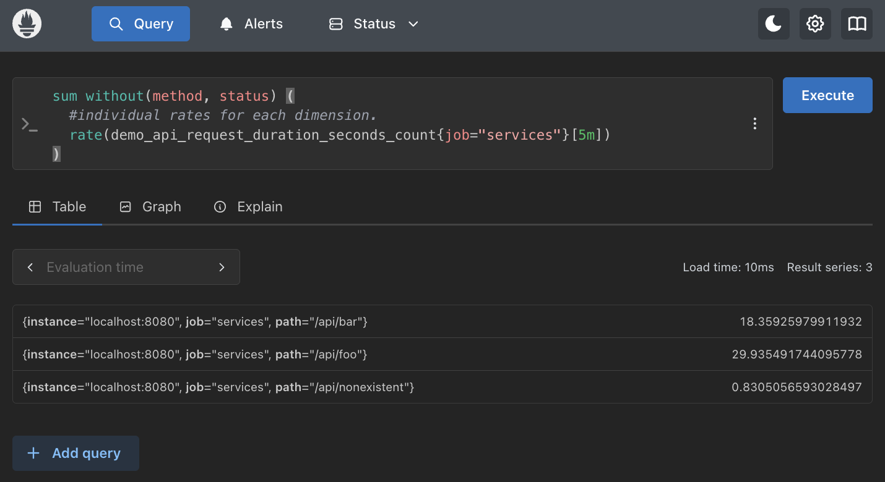
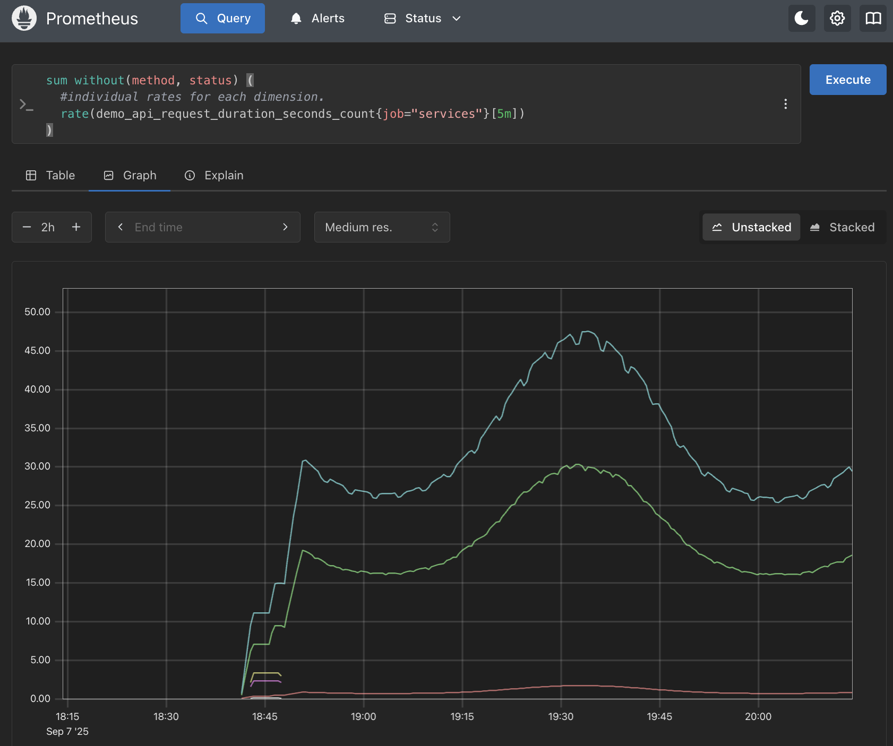
Basic PromQL - Visualizing using by function
Another approach is to use inclusion with the
by() function. This is going
to give us the power to aggregate by using only the included dimensional data:
sum by(instance, job, path) (
#individual rates for each dimension.
rate(demo_api_request_duration_seconds_count{job="services"}[5m])
)
Basic PromQL - Graphing the by function
The first graph shows the dimensions being summed in the second, but second includes three
labels. The dimensions being queried are only those you specified:
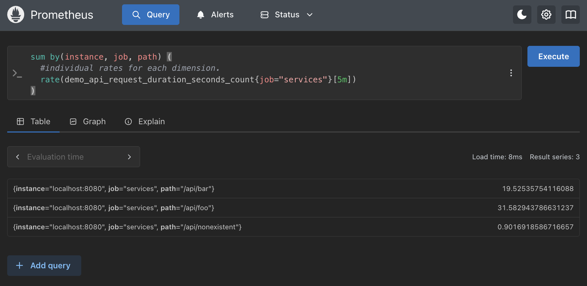
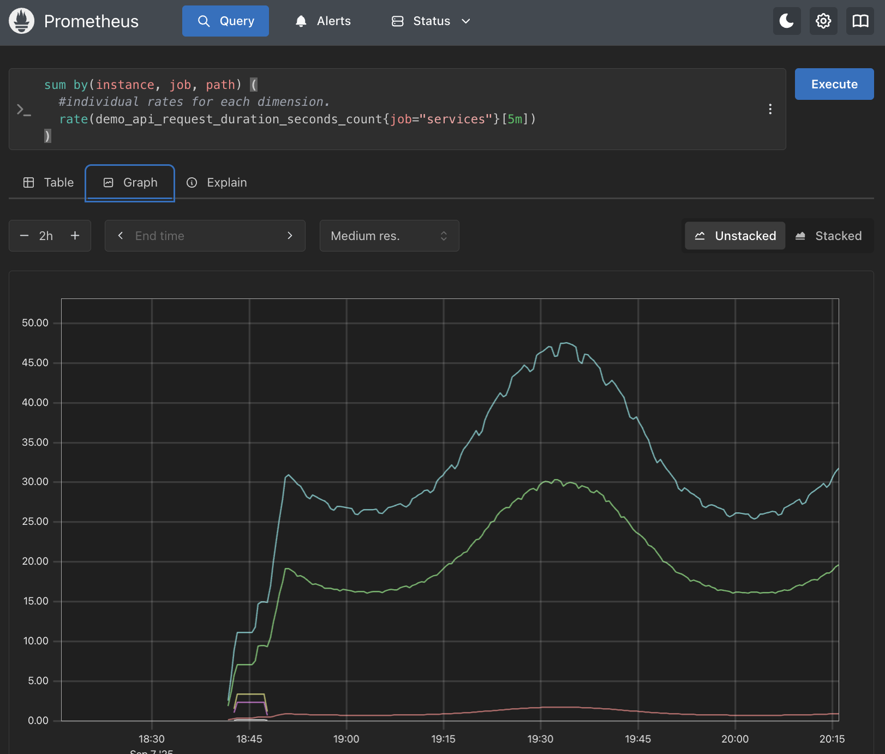
Intermezzo - without() over by()
There is a great article covering the details on why you should use without over by, see
RobustPerception on by() vs. without()
The reality is that, as your metrics gain new labels over time, your expression results automatically include any newly added labels if you use
You won't have to revisit or edit aggregation expressions.
The reality is that, as your metrics gain new labels over time, your expression results automatically include any newly added labels if you use
without().You won't have to revisit or edit aggregation expressions.
Basic PromQL - The rest of aggregation story
See the documentation, beyond those covered in this workshop, Prometheus supports more
aggregators:
stddev(): calculates the standard deviation of all values within an aggregated group.stdvar(): calculates the standard variance of all values within an aggregated group.count(): calculates the total number of series within an aggregated group.count_values(): calculates number of elements with the same sample value.bottomk(k, ...): calculates the smallest k elements by sample value.topk(k, ...): calculates the largest k elements by sample value.quantile(φ, ...): calculates the φ-quantile (0 ≤ φ ≤ 1) over dimensions.group(...): just group by labels and set the sample value to 1.limitk(k, ...): samples k elements from the result.limit_ratio(r, ...): samples elements with approximately ratio r (0 < r ≤ 1).
Basic PromQL - Doing simple math
You can do any arithmetic you like with the query language, which is fun for numbers, so try a
few of these to see all the supported operators in action (the first one is shown in example
below):
- (2 + 2 / 2) * 3
- ((4 - 2 / 2) * 3) * 2^2
- (5 % 3)
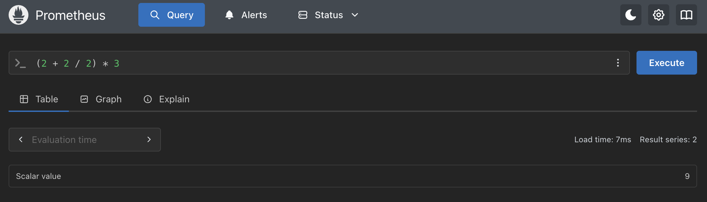
Basic PromQL - Time series interesting math
It becomes much more interesting when you start using math operators applied to time series
data queries for human-readable output. Take for example the first query below that returns
it's results in bytes. In the second query with a bit of applied math, dividing the results
by 1024 twice, you turn these results into human-readable MBs:
demo_batch_last_run_processed_bytes{job="services"}
demo_batch_last_run_processed_bytes{job="services"} / 1024 / 1024
Basic PromQL - Interesting math results
The results of the first query in bytes followed by the massaged results in MBs:
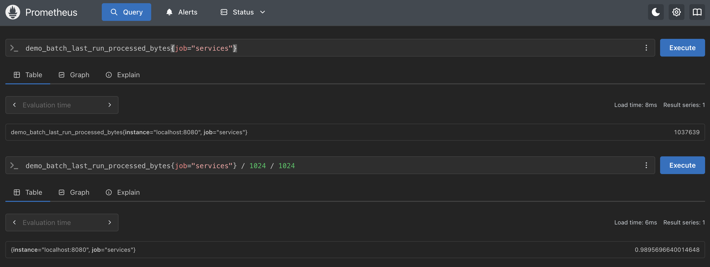
Basic PromQL - The power of binary operations
A very powerful feature is that the query language supports binary operations between whole
sets of time series. If we query using the metric
demo_api_request_duration_seconds_sum over 5 minutes we track the total time
spent in each dimension, that's each label (instance, job, method, path, status). If we divide
that by the metric demo_api_request_duration_seconds_count which collects
the total count of requests for the same set of dimensions (again, the labels), gives you the
average request duration over the last 5 minutes, broken out by each dimension (by each label):
rate(demo_api_request_duration_seconds_sum{job="services"}[5m])
/
rate(demo_api_request_duration_seconds_count{job="services"}[5m])
Basic PromQL - Results binary operation
The results of a binary operation, average request duration broken out by each dimension:
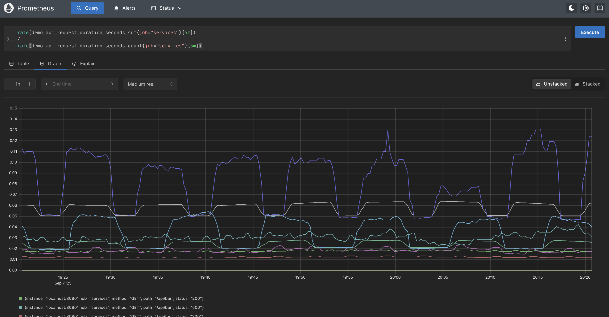
Basic PromQL - Mismatched dimensions (labels)
In many cases the metrics you query will not have the same dimensions, one side having more than
the other means you have to tell the divide operator which label to group by. In the below
example, the
demo_cpu_usage_seconds_total metric has an additional
mode label dimension. To calculate per-mode CPU usage divided by the number
of cores to find a per-core usage value of 0 to 1, you are telling it to group by the extra
mode label dimension. This is done with group_left
modifier, and then you also need to exclude the mode label by explicitly
matching only the mutually existing labels using the on modifier:
rate(demo_cpu_usage_seconds_total{job="services"}[5m])
/
on(job, instance) group_left demo_num_cpus{job="services"}
Basic PromQL - Results mismatch dimensions
The results of your binary operation, finding a per-core usage value of 0 to 1:
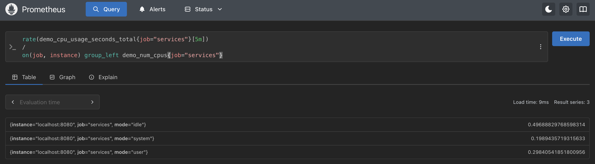
Basic PromQL - Other options to try
You can approach the previous problem from the other direction using the
ignoring() modifier to exclude the mode label dimensions
from your query. It does not apply here, but if there are extra dimensions on the right instead
of the left side of the operation, you can use group_right modifier instead.
Let's try this:
rate(demo_cpu_usage_seconds_total{job="services"}[5m])
/
ignoring(mode) group_left demo_num_cpus{job="services"}
Basic PromQL - Results other options
The results of your binary operation, finding a per-core usage value of 0 to 1 using
ignoring:
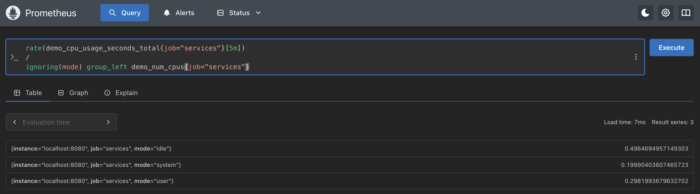
Lab completed - Results
Next up, exploring advanced queries...

Contact - are there any questions?
Eric D. Schabell
Director Evangelism
Contact: @ericschabell {@fosstodon.org) or https://www.schabell.org
Director Evangelism
Contact: @ericschabell {@fosstodon.org) or https://www.schabell.org